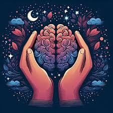
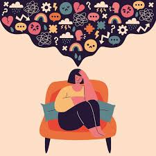
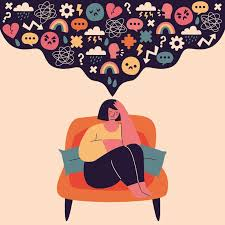

Mental Health
Periods can affect mental health because of hormone changes. Many girls and women feel PMS(Premenstrual Syndrome) before their periods, which can cause mood swings, headaches, and bloating.
Some face a more serious condition called PMDD, with stronger feelings like depression,anger,and that affect daily life.
Common Emotional Symptoms:
1. Irritability or anger
2. Sadness or hopelessness
3. Tiredness
These feelings are normal and caused by hormones. With support and care, they can be managed.
 
